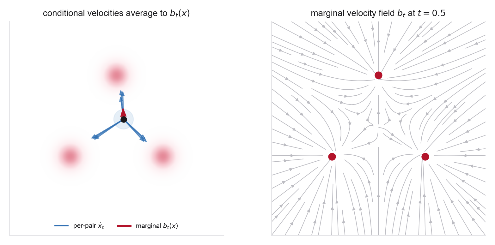

- The continuity equation and marginalization trick (Week 3 Problem 1)
- Conditional expectation as the minimizer of squared error (Weeks 2-3)
- Gaussian densities and their scores
- The tower property of conditional expectation
- Integration by parts / pushing derivatives through an integral
- Albergo, Boffi & Vanden-Eijnden (Stochastic Interpolants), §2 (§2.1-2.2)
- Albergo & Vanden-Eijnden (Building Normalizing Flows), §2 for the deterministic skeleton
- Week 3 Problem 1 for the identical marginalization / CFM argument with a velocity
- Week 2 Problem 1 for the conditional-mean argument on the score
This problem builds the stochastic interpolant and proves the first of its two structural facts: a velocity field, defined as a conditional expectation along the path, generates the marginal law and is learnable by a simulation-free regression. The setup is deliberately parallel to Week 3. There you chose a deterministic path \(x_t=(1-t)x_0+t x_1\) and learned a velocity. Here you choose a path with its own latent noise, and the same two-step logic, define the field as a posterior average, show it solves the continuity equation, returns, with one new term to carry. The point is that adding the latent \(\gamma_t z\) changes nothing about the velocity argument, while (in Problem 2) it makes the score trivially available on the same path.
Convention. Base/noise at \(t=0\), data at \(t=1\): the model transports the base \(\mathcal N(0,I)\) to the data \(q\) as \(t\) runs forward. Write \(x_0\sim\mathcal N(0,I)\), \(x_1\sim q\), and \(z\sim\mathcal N(0,I)\) independent of both unless stated otherwise. Reserve \(\rho_t\) for the law of \(x_t\); the endpoint conditions on the coefficients are what force \(\rho_0=\mathcal N(0,I)\) and \(\rho_1=q\), which is the (small) content of part 1. Work on \(\mathbb R^d\). Take \(\alpha,\beta,\gamma\) continuous on \([0,1]\) and \(C^1\) on the open interval \((0,1)\), with \(\gamma_t\ge0\). Do not ask for \(C^1\) up to the endpoints: the standard choice \(\gamma_t=\sqrt{2t(1-t)}\) has \(\dot\gamma_t=(1-2t)/\sqrt{2t(1-t)}\to\pm\infty\) there, and that divergence is a real feature of the construction, not a defect to assume away (part 2 tracks it, and Problem 3 pays for it in gradient variance). All density and continuity-equation identities are for \(0<t<1\), with the endpoints understood as weak limits. Conditional expectations are regular conditional expectations, defined \(\rho_t\)-almost everywhere. Assume \(q\) has finite second moment and enough smoothness/decay to interchange \(t\)-derivatives, divergences, and integrals, and restrict to times where \(\gamma_t>0\) when dividing by it.
Warm-up (optional, recommended). Do the Gaussian case in closed form first. Take \(q=\mathcal N(m,s^2 I)\), coefficients \(\alpha_t=1-t,\beta_t=t\), and latent width \(\gamma_t\). Show the marginal is \(\rho_t=\mathcal N\big(tm,\,[(1-t)^2+t^2 s^2+\gamma_t^2]\,I\big)\), and that the velocity \(b_t(x)=\mathbb E[\dot x_t\mid x_t=x]\) is affine in \(x\). Every numbered part below is the general (arbitrary-\(q\)) version of this one example, and Problem 3 trains exactly this object.

- The interpolant and its marginal. Define the stochastic interpolant \(x_t=\alpha_t x_0+\beta_t x_1+\gamma_t z\) with \(\alpha_0=1,\beta_0=0,\gamma_0=0\) and \(\alpha_1=0,\beta_1=1,\gamma_1=0\), and \(z\sim\mathcal N(0,I)\) independent of \((x_0,x_1)\). Show that its law \(\rho_t\) satisfies \(\rho_0=\mathcal N(0,I)\) (the base) and \(\rho_1=q\) (the data), so it is a genuine probability path between them. Writing the conditional law \(x_t\mid(x_0,x_1)\sim\mathcal N(\alpha_t x_0+\beta_t x_1,\gamma_t^2 I)\), give \(\rho_t\) as the mixture \(\rho_t(x)=\mathbb E_{(x_0,x_1)}\,\mathcal N(x;\alpha_t x_0+\beta_t x_1,\gamma_t^2 I)\), and explain in one line why \(\gamma_t>0\) is sufficient for \(\rho_t\) to have a smooth density even when \(q\) is singular (a point cloud or a lower-dimensional manifold), the property Problem 2 needs for the score. Then show it is not necessary: with the independent coupling and a Gaussian base, \(\alpha_t x_0\) already convolves \(q\) with a Gaussian of width \(\alpha_t\), so the sharp condition is \(\sigma_t^2:=\alpha_t^2+\gamma_t^2>0\). Identify the three places where the latent is nevertheless the robust guarantor: the score identity of Problem 2 (which divides by \(\gamma_t\)); one-sided constructions, in which the base contribution \(\alpha_t x_0\) is absent in the interior and the latent itself supplies the noisy endpoint (so the \(\gamma_0=0\) convention above is replaced); and an arbitrary coupling (part 6), where the Gaussian-base argument collapses because \(\alpha_t x_0\) is no longer independent of \(x_1\). Make that third case concrete, since it is easy to get wrong. Fix \(q=\mathcal N(0,I)\), so base and data laws agree and both couplings below are legal, and take \(\alpha_t=1-t,\beta_t=t\), \(\gamma_t\equiv0\). Under the diagonal coupling \(x_1=x_0\) you get \(x_t=x_0\sim\mathcal N(0,I)\) at every \(t\): the marginal stays perfectly smooth, so dependence alone buys no counterexample. Under the antipodal coupling \(x_1=-x_0\), however, \(x_t=(\alpha_t-\beta_t)x_0\) vanishes at \(t=\tfrac12\), where \(\alpha_t=\beta_t\), so \(\rho_{1/2}=\delta_0\) is singular. Conclude that a dependent \(\pi\) can collapse the deterministic part \(\alpha_t x_0+\beta_t x_1\) onto a lower-dimensional set at some times, and that \(\gamma_t>0\) is what rules this out uniformly in \(\pi\).
- The velocity as a conditional expectation. Define the velocity field as the posterior average of the path's time derivative, \[ b_t(x)=\mathbb E\big[\dot x_t\mid x_t=x\big],\qquad \dot x_t=\dot\alpha_t x_0+\dot\beta_t x_1+\dot\gamma_t z, \] so \(b_t(x)=\dot\alpha_t\,\mathbb E[x_0\mid x_t{=}x]+\dot\beta_t\,\mathbb E[x_1\mid x_t{=}x]+\dot\gamma_t\,\mathbb E[z\mid x_t{=}x]\). Using the Gaussian conditional law of part 1, write each conditional expectation as a posterior integral: for \(\gamma_t>0\) the posterior over endpoint pairs is \[ p_t(x_0,x_1\mid x)=\frac{\mathcal N(x_0;0,I)\,q(x_1)\,\mathcal N\!\big(x;\alpha_t x_0+\beta_t x_1,\gamma_t^2 I\big)}{\rho_t(x)}, \] against which \(\mathbb E[x_0\mid x_t{=}x]\) and \(\mathbb E[x_1\mid x_t{=}x]\) are averaged, and \(\mathbb E[z\mid x_t{=}x]=\gamma_t^{-1}\big(x-\alpha_t\mathbb E[x_0\mid x_t{=}x]-\beta_t\mathbb E[x_1\mid x_t{=}x]\big)\). Note that for general \(q\) these integrals have no closed form: "explicit" here means the posterior formula, not an elementary function. Carry them out in closed form only in the Gaussian warm-up above, where the posterior is Gaussian and \(b_t\) comes out affine in \(x\). Confirm \(b_t\) is well-defined for \(0<t<1\), state clearly that \(b_t\) is a genuine conditional expectation, and identify the posterior it averages against, the analogue of the Week 3 marginalization weight now over the pair \((x_0,x_1)\) and latent \(z\).
- The transport equation. Prove that \(b_t\) generates \(\rho_t\): that is, \[ \partial_t\rho_t(x)+\nabla\!\cdot\!\big(\rho_t(x)\,b_t(x)\big)=0. \] Do it the Week 3 way. Start from the conditional law, which satisfies its own continuity equation with the mean velocity \(\dot\mu_t=\dot\alpha_t x_0+\dot\beta_t x_1\) and a diffusion term from \(\gamma_t\), \[ \partial_t\rho_t(x\mid x_0,x_1)=-\nabla\!\cdot\!\big(\rho_t(x\mid x_0,x_1)\,\dot\mu_t\big) +\gamma_t\dot\gamma_t\,\Delta\rho_t(x\mid x_0,x_1) \] (careful: the drift here is \(\dot\mu_t\), not the full \(\dot x_t\); with the full \(\dot x_t\) the pair-conditional law obeys a pure continuity equation and no diffusion term appears at all, since \(z=(x-\mu_t)/\gamma_t\) is determined by \((x,x_0,x_1)\)); average over \((x_0,x_1)\); and show the diffusion contribution reorganizes into the divergence of \(\rho_t b_t\) using \(\gamma_t\dot\gamma_t\Delta\rho_t=\nabla\!\cdot(\rho_t\,\dot\gamma_t\gamma_t\nabla\log\rho_t)\) and the fact that \(-\dot\gamma_t\gamma_t\nabla\log\rho_t\) is exactly the \(\dot\gamma_t\mathbb E[z\mid x_t{=}x]\) piece of \(b_t\) (this is the identity \(\mathbb E[z\mid x_t{=}x]=-\gamma_t\nabla\log\rho_t\), and mind the sign: the diffusion term enters \(\partial_t\rho_t\) with a plus, so it is the negative of the \(z\)-piece's divergence that it supplies). Rather than import that identity from Problem 2, prove it here in two lines and keep this problem self-contained: differentiate the mixture of part 1 under the integral, \(\nabla\rho_t(x)=\mathbb E_{(x_0,x_1)}\big[\mathcal N(x;\mu_t,\gamma_t^2I)\cdot(\mu_t-x)/\gamma_t^2\big]\) with \(\mu_t=\alpha_t x_0+\beta_t x_1\), recognize \((x-\mu_t)/\gamma_t=z\), and divide by \(\rho_t(x)\) to turn the mixture average into the posterior average \(\nabla\log\rho_t(x)=-\gamma_t^{-1}\mathbb E[z\mid x_t{=}x]\). Conclude that, under the regularity needed for the flow of \(b_t\) to exist and be unique, the probability-flow ODE \(\dot X_t=b_t(X_t)\) with \(X_0\sim\mathcal N(0,I)\) transports the base onto \(q\); absent that regularity, what you have proved is that the pair \((\rho_t,b_t)\) solves the continuity equation in the weak sense, which is the statement the rest of the week actually uses. Then, having done it the long way, give the one-line weak-form proof: for \(\varphi\in C_c^\infty\), \(\frac{\mathrm d}{\mathrm dt}\mathbb E[\varphi(x_t)]=\mathbb E[\nabla\varphi(x_t)\cdot\dot x_t] =\mathbb E[\nabla\varphi(x_t)\cdot b_t(x_t)]\) by the tower property. Note that this second proof touches neither Gaussianity nor \(\gamma_t\), and so already covers part 6.
- The simulation-free objective. The marginal field \(b_t\) is intractable, because the posterior over \((x_0,x_1,z)\) involves the unknown \(\rho_t(x)\). Define the tractable per-sample objective that regresses onto the path's realized velocity, \[ \mathcal L_b(\theta)=\mathbb E_{t,\,x_0\sim\mathcal N(0,I),\,x_1\sim q,\,z\sim\mathcal N(0,I)} \big\|b_\theta(x_t,t)-\dot x_t\big\|^2,\qquad t\sim\mathcal U[0,1], \] and prove that its minimizer over all measurable fields is \(b^\star(x,t)=b_t(x)\), unique for \(\mathrm dt\otimes\rho_t(\mathrm dx)\)-almost every \((t,x)\). Say why the almost-everywhere hedge is not a technicality: the loss never sees states off the support of the interpolant, so it cannot constrain \(b_\theta\) there, and nothing in the argument pins the field down at such points. Give the clean argument: for fixed \((x,t)\) the inner problem \(\min_c\mathbb E[\|c-\dot x_t\|^2\mid x_t=x]\) is solved by the conditional mean \(c=\mathbb E[\dot x_t\mid x_t=x]=b_t(x)\, ,\) so the objective decomposes into this pointwise regression plus a \(\theta\)-independent variance. Identify the single line that is identical to the denoising-score-matching proof of Week 2 Problem 1 and the CFM proof of Week 3 Problem 1: it is the same conditional-mean move applied to a different per-sample target.
- Flow matching is the deterministic limit. Set \(\gamma_t\equiv0\) and \(\alpha_t=1-t,\beta_t=t\). Show the interpolant collapses to the Week 3 straight-line path \(x_t=(1-t)x_0+t x_1\), the velocity target \(\dot x_t=x_1-x_0\) becomes the conditional flow-matching target, and \(\mathcal L_b\) becomes the CFM loss. So the stochastic interpolant contains flow matching exactly, as the zero-latent case. State what is lost in this limit that Problem 2 will need. Here \(\rho_t\) does still have a score for \(0<t<1\), but say why, and note how narrow the reason is: with an independent Gaussian base the term \((1-t)x_0\) supplies Gaussian smoothing of width \(\sigma_t=\alpha_t=1-t>0\), which is the \(\gamma_t=0\) case of the sharp condition \(\alpha_t^2+\gamma_t^2>0\) from part 1. That reason uses independence and the Gaussian base, and by the antipodal example of part 1 it fails under a general coupling. Even where the score exists, the clean identity \(s_t=-\gamma_t^{-1}\mathbb E[z\mid x_t{=}x]\) degenerates, leaving no simulation-free target for it. Both failures are exactly why the latent term is added back.
- Any coupling keeps it unbiased (a first look). So far \((x_0,x_1)\) are independent. Replace the independent pairing by an arbitrary coupling \(\pi(x_0,x_1)\) with the correct marginals \(\rho_0,q\), keeping \(z\) independent. Show parts 2-4 go through unchanged, the velocity is still \(\mathbb E[\dot x_t\mid x_t=x]\) under the new joint law, it still solves the transport equation, and \(\mathcal L_b\) still has it as minimizer, and state the one thing the coupling changes: the field \(b_t\), hence the curvature of the learned trajectories, not the endpoint marginals. Flag that Problem 4 exploits a dependent \(\pi\) (unrelaxed to relaxed structures) and that Week 5 makes the coupling the central design variable.